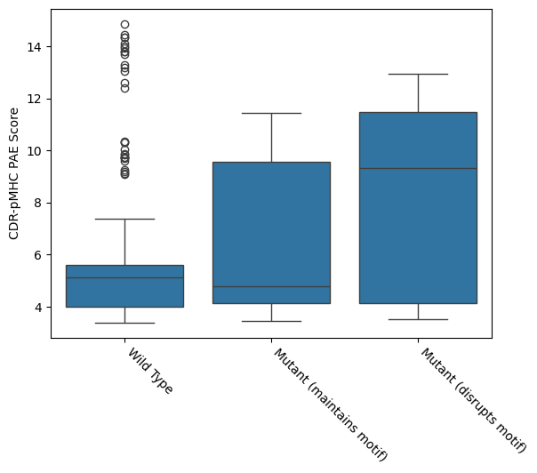
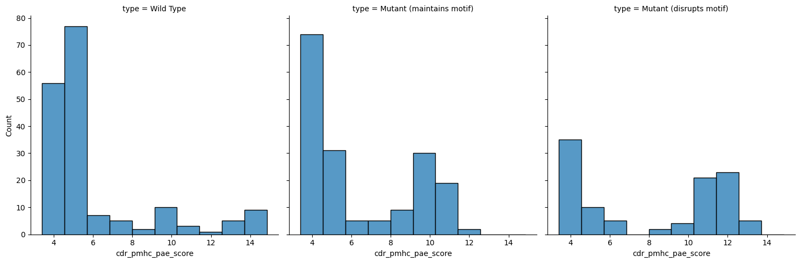
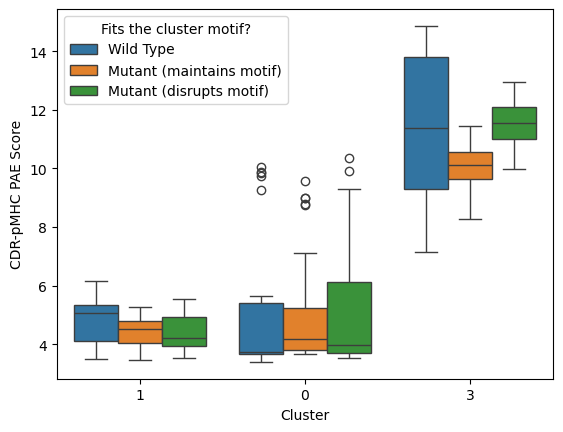
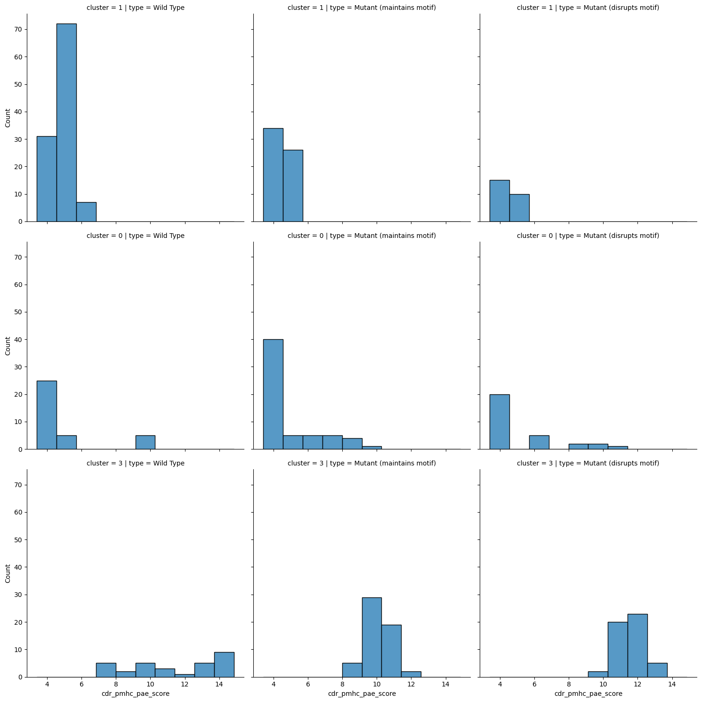
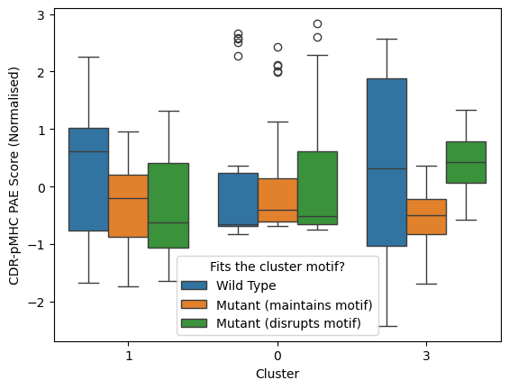
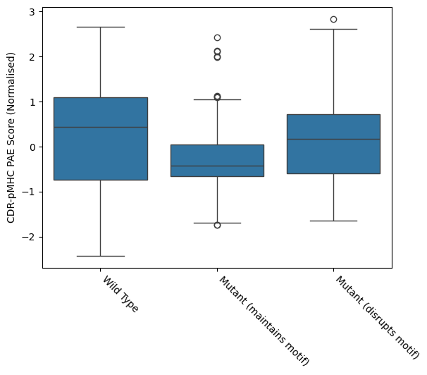
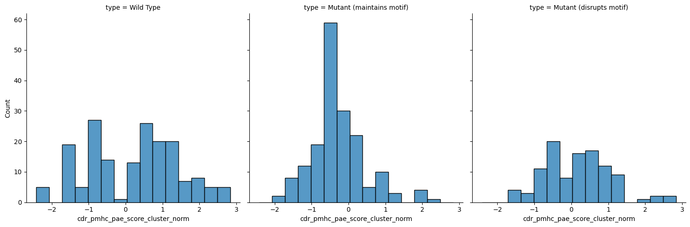

Dash et al mutagenesis analysis
In this notebook, we analyse whether the AlphaFold confidence scores are sensitive enough to detect disruptions to the binding motif of TCRs.
[1]:
import itertools
import re
import subprocess
import anarci
import matplotlib.pyplot as plt
import numpy as np
import pandas as pd
import pingouin as pg
import seaborn as sns
import tidytcells
from tcr_pmhc_predicted_structures.imgt_numbering import IMGT_CDR3
[2]:
def get_cdr3(sequence: str) -> str:
"""Get CDR3 from TCR chain sequence."""
numbering, _ = anarci.number(sequence)
cdr3 = ''.join(amino_acid for (seq_id, _), amino_acid in numbering if amino_acid != '-' and seq_id in IMGT_CDR3)
return tidytcells.junction.standardise(cdr3)
Defining cluster motifs
[3]:
dash_sequences = pd.read_csv('../data/interim/sequences_dash.csv', index_col='id')
[4]:
dash_sequences_bmlf = dash_sequences.query("peptide == 'GLCTLVAML'").copy()
[5]:
with open('../data/interim/dash_BMLF_sequence_clusters.txt', 'r') as fh:
clusters = dict(line.strip().split() for line in fh if line)
dash_sequences_bmlf['cluster'] = dash_sequences_bmlf.index.map(clusters)
[6]:
dash_sequences_bmlf_clustered = dash_sequences_bmlf.query("cluster != 'None'").copy()
dash_sequences_bmlf_clustered.value_counts('cluster')
[6]:
cluster
1 22
0 7
3 6
Name: count, dtype: int64
[7]:
dash_sequences_bmlf_clustered['cdr3_alpha'] = dash_sequences_bmlf_clustered['tcr_alpha_chain'].map(get_cdr3)
dash_sequences_bmlf_clustered['cdr3_beta'] = dash_sequences_bmlf_clustered['tcr_beta_chain'].map(get_cdr3)
[8]:
def align_sequences(sequences: list[str]) -> list[str]:
child = subprocess.Popen(
[
'/usr/bin/env',
'mafft-linsi',
'--quiet',
'--op',
'2',
'--ep',
'10',
'--amino',
'-',
],
stdin=subprocess.PIPE,
stdout=subprocess.PIPE,
)
child.stdin.write('\n'.join(f'>{idx}\n{sequence}' for idx, sequence in enumerate(sequences)).encode())
child_out = child.communicate()[0].decode('utf8')
aligned_sequences = [line.strip() for line in child_out.split('\n') if line and not line.startswith('>')]
child.stdin.close()
return aligned_sequences
def create_motif_regex(group: pd.DataFrame, num_amino_acid_cutoff: int = 2) -> pd.Series:
def _create_regex(amino_acids: set, *, optional: bool) -> str:
if '*' in amino_acids:
regex = '[A-Z]'
elif len(amino_acids) == 1:
regex = next(iter(amino_acids))
else:
regex = '[' + ''.join(sorted(amino_acids)) + ']'
if optional:
regex += '?'
return regex
motifs = []
for chain_type in 'alpha', 'beta':
cdr3s = align_sequences(group[f'cdr3_{chain_type}'].tolist())
motif = [set(amino_acids) for amino_acids in zip(*cdr3s, strict=True)]
motif = [({aa for aa in amino_acids if aa != '-'}, '-' in amino_acids) for amino_acids in motif]
motif = [
(residues if len(residues) <= num_amino_acid_cutoff else {'*'}, optional) for residues, optional in motif
]
motif = ''.join([_create_regex(amino_acids, optional=optional) for amino_acids, optional in motif])
motifs.append(motif)
return pd.Series(motifs, index=['cdr3_alpha_motif', 'cdr3_beta_motif'])
cluster_motifs = dash_sequences_bmlf_clustered.groupby('cluster').apply(create_motif_regex, include_groups=False)
[9]:
cluster_motifs
[9]:
| cdr3_alpha_motif | cdr3_beta_motif | |
|---|---|---|
| cluster | ||
| 0 | CAES[A-Z]S?[GR]?GKLIF | CSVG[A-Z][A-Z]GTNEKLFF |
| 1 | C[AS][A-Z]D[A-Z]N[A-Z]RLMF | CSAR[DV][A-Z][A-Z]GNG[HY]TF |
| 3 | CA[LV]RCFGNEKLTF | CSVP[A-Z][AT]VQETQYF |
Assinging mutated sequence to motifs
[10]:
sequences_mutated = pd.read_csv('../data/interim/sequences_dash_BMLF_mutated.csv', index_col='id')
[11]:
sequences_mutated['cdr3_alpha'] = sequences_mutated['tcr_alpha_chain'].map(get_cdr3)
sequences_mutated['cdr3_beta'] = sequences_mutated['tcr_beta_chain'].map(get_cdr3)
[12]:
sequences_mutated['cluster'] = sequences_mutated.index.map(lambda id_: id_.split('_mut_')[0]).map(clusters)
[13]:
sequences_mutated = sequences_mutated.merge(cluster_motifs, how='inner', left_on='cluster', right_index=True)
[14]:
sequences_mutated['fit_cdr3_alpha_motif'] = sequences_mutated[['cdr3_alpha_motif', 'cdr3_alpha']].apply(
lambda row: re.fullmatch(*row) is not None, axis=1
)
sequences_mutated['fit_cdr3_beta_motif'] = sequences_mutated[['cdr3_beta_motif', 'cdr3_beta']].apply(
lambda row: re.fullmatch(*row) is not None, axis=1
)
sequences_mutated['fit_motif'] = sequences_mutated['fit_cdr3_alpha_motif'] & sequences_mutated['fit_cdr3_alpha_motif']
[15]:
sequences_mutated.value_counts('fit_motif')
[15]:
fit_motif
True 35
False 21
Name: count, dtype: int64
Analysing effect on confidences scores
[16]:
confidence_scores_dash = pd.read_csv('../data/interim/confidence_scores_af3_af3_tcrmodel2_dash_bmlf.csv')
confidence_scores_dash = confidence_scores_dash.merge(
dash_sequences_bmlf_clustered, how='right', left_on='name', right_index=True
)
confidence_scores_dash['type'] = 'Wild Type'
[17]:
confidence_scores_mutations = pd.read_csv('../data/interim/confidence_scores_af3_af3_tcrmodel2_mutated_dash_bmlf.csv')
confidence_scores_mutations = confidence_scores_mutations.merge(
sequences_mutated, how='left', left_on='name', right_index=True
)
confidence_scores_mutations['type'] = 'Mutant ' + confidence_scores_mutations['fit_motif'].map(
lambda fit_motif: '(maintains motif)' if fit_motif else '(disrupts motif)'
)
[18]:
confidence_scores = pd.concat([confidence_scores_dash, confidence_scores_mutations])
[ ]:
ax = sns.boxplot(confidence_scores, y='cdr_pmhc_pae_score', x='type')
ax.set_xlabel('')
ax.set_ylabel('CDR-pMHC PAE Score')
ax.set_xticks(ax.get_xticks())
ax.set_xticklabels(ax.get_xticklabels(), rotation=-45, ha='left')
plt.show()

[20]:
sns.displot(confidence_scores, x='cdr_pmhc_pae_score', col='type', kind='hist')
plt.show()

[21]:
pg.kruskal(confidence_scores, dv='cdr_pmhc_pae_score', between='type')
[21]:
| Source | ddof1 | H | p-unc | |
|---|---|---|---|---|
| Kruskal | type | 2 | 17.871998 | 0.000132 |
[22]:
print('Post-hoc:')
results = []
for (name1, group1), (name2, group2) in itertools.combinations(confidence_scores.groupby('type', sort=False), 2):
result = pg.mwu(group1['cdr_pmhc_pae_score'], group2['cdr_pmhc_pae_score'], alternative='less')
result.index = [f'{name1} - {name2}']
results.append(result)
results = pd.concat(results)
results['significant'] = results['p-val'] < (0.05 / len(results))
results
Post-hoc:
[22]:
| U-val | alternative | p-val | RBC | CLES | significant | |
|---|---|---|---|---|---|---|
| Wild Type - Mutant (maintains motif) | 14714.0 | less | 0.263749 | -0.039086 | 0.519543 | False |
| Wild Type - Mutant (disrupts motif) | 6701.0 | less | 0.000075 | -0.270639 | 0.635320 | True |
| Mutant (maintains motif) - Mutant (disrupts motif) | 6712.0 | less | 0.000081 | -0.269442 | 0.634721 | True |
We do see that the confidence scores have a difference between sequences that fit the binding motif and things that do not.
Blocking by cluster group
We can see that the cluster group itself has a big effect on the effect of mutations.
[23]:
confidence_scores.drop_duplicates('name').value_counts(['cluster', 'type']).sort_index()
[23]:
cluster type
0 Mutant (disrupts motif) 6
Mutant (maintains motif) 12
Wild Type 7
1 Mutant (disrupts motif) 5
Mutant (maintains motif) 12
Wild Type 22
3 Mutant (disrupts motif) 10
Mutant (maintains motif) 11
Wild Type 6
Name: count, dtype: int64
[ ]:
ax = sns.boxplot(confidence_scores, y='cdr_pmhc_pae_score', x='cluster', hue='type')
ax.set_ylabel('CDR-pMHC PAE Score')
ax.set_xlabel('Cluster')
ax.legend(title='Fits the cluster motif?')
plt.show()

[25]:
sns.displot(confidence_scores, x='cdr_pmhc_pae_score', row='cluster', col='type', kind='hist')
plt.show()

[26]:
pg.anova(confidence_scores, dv='cdr_pmhc_pae_score', between=['cluster', 'type'])
[26]:
| Source | SS | DF | MS | F | p-unc | np2 | |
|---|---|---|---|---|---|---|---|
| 0 | cluster | 3307.804048 | 2.0 | 1653.902024 | 930.281631 | 7.250966e-160 | 0.806639 |
| 1 | type | 36.411514 | 2.0 | 18.205757 | 10.240317 | 4.485145e-05 | 0.043905 |
| 2 | cluster * type | 35.344849 | 4.0 | 8.836212 | 4.970165 | 6.284575e-04 | 0.042673 |
| 3 | Residual | 792.921496 | 446.0 | 1.777851 | NaN | NaN | NaN |
[27]:
results = []
for cluster_name, cluster in confidence_scores.groupby('cluster'):
types = [
(type_, cluster[cluster['type'] == type_])
for type_ in ('Wild Type', 'Mutant (maintains motif)', 'Mutant (disrupts motif)')
]
for (name1, group1), (name2, group2) in itertools.combinations(types, 2):
result = pg.ttest(group1['cdr_pmhc_pae_score'], group2['cdr_pmhc_pae_score'], paired=False, alternative='less')
result.index = [f'{cluster_name}: {name1} - {name2}']
results.append(result)
results = pd.concat(results)
results['significant'] = results['p-val'] < (0.05 / len(results))
results
[27]:
| T | dof | alternative | p-val | CI95% | cohen-d | BF10 | power | significant | |
|---|---|---|---|---|---|---|---|---|---|
| 0: Wild Type - Mutant (maintains motif) | -0.260327 | 57.129811 | less | 3.977738e-01 | [-inf, 0.59] | 0.059437 | 0.458 | 8.574489e-02 | False |
| 0: Wild Type - Mutant (disrupts motif) | -0.618137 | 61.158304 | less | 2.693902e-01 | [-inf, 0.57] | 0.153999 | 0.598 | 1.509112e-01 | False |
| 0: Mutant (maintains motif) - Mutant (disrupts motif) | -0.496444 | 45.774559 | less | 3.109783e-01 | [-inf, 0.53] | 0.122102 | 0.517 | 1.350165e-01 | False |
| 1: Wild Type - Mutant (maintains motif) | 4.752320 | 158.891488 | less | 9.999978e-01 | [-inf, 0.6] | 0.686249 | 0.0 | 1.777116e-09 | False |
| 1: Wild Type - Mutant (disrupts motif) | 2.681470 | 38.048391 | less | 9.946099e-01 | [-inf, 0.65] | 0.563174 | 0.098 | 1.497608e-05 | False |
| 1: Mutant (maintains motif) - Mutant (disrupts motif) | -0.316088 | 35.767620 | less | 3.768865e-01 | [-inf, 0.2] | 0.084618 | 0.512 | 9.813044e-02 | False |
| 3: Wild Type - Mutant (maintains motif) | 2.445430 | 31.529150 | less | 9.898794e-01 | [-inf, 2.05] | 0.720177 | 0.167 | 8.240884e-07 | False |
| 3: Wild Type - Mutant (disrupts motif) | -0.469330 | 31.737883 | less | 3.210211e-01 | [-inf, 0.61] | 0.135147 | 0.525 | 1.435031e-01 | False |
| 3: Mutant (maintains motif) - Mutant (disrupts motif) | -9.924354 | 102.196904 | less | 5.876984e-17 | [-inf, -1.2] | 1.938524 | 7.601e+13 | 1.000000e+00 | True |
We only see significance for cluster 3.
Normalising values within groups
[28]:
confidence_scores['cdr_pmhc_pae_score_cluster_norm'] = confidence_scores.groupby('cluster')[
'cdr_pmhc_pae_score'
].transform(lambda scores: (scores - np.mean(scores)) / np.std(scores))
[ ]:
ax = sns.boxplot(confidence_scores, y='cdr_pmhc_pae_score_cluster_norm', x='cluster', hue='type')
ax.set_ylabel('CDR-pMHC PAE Score (Normalised)')
ax.set_xlabel('Cluster')
ax.legend(title='Fits the cluster motif?')
plt.show()

[ ]:
ax = sns.boxplot(confidence_scores, y='cdr_pmhc_pae_score_cluster_norm', x='type')
ax.set_xlabel('')
ax.set_ylabel('CDR-pMHC PAE Score (Normalised)')
ax.set_xticks(ax.get_xticks())
ax.set_xticklabels(ax.get_xticklabels(), rotation=-45, ha='left')
plt.show()

[31]:
sns.displot(confidence_scores, x='cdr_pmhc_pae_score_cluster_norm', col='type', kind='hist')
plt.show()

[32]:
pg.anova(confidence_scores, dv='cdr_pmhc_pae_score_cluster_norm', between='type')
[32]:
| Source | ddof1 | ddof2 | F | p-unc | np2 | |
|---|---|---|---|---|---|---|
| 0 | type | 2 | 452 | 13.305969 | 0.000002 | 0.055602 |
[33]:
print('Post-hoc:')
results = []
for (name1, group1), (name2, group2) in itertools.combinations(confidence_scores.groupby('type', sort=False), 2):
result = pg.ttest(
group1['cdr_pmhc_pae_score_cluster_norm'],
group2['cdr_pmhc_pae_score_cluster_norm'],
paired=False,
alternative='less',
)
result.index = [f'{name1} - {name2}']
results.append(result)
results = pd.concat(results)
results['significant'] = results['p-val'] < (0.05 / len(results))
results
Post-hoc:
[33]:
| T | dof | alternative | p-val | CI95% | cohen-d | BF10 | power | significant | |
|---|---|---|---|---|---|---|---|---|---|
| Wild Type - Mutant (maintains motif) | 4.693270 | 348.000000 | less | 0.999998 | [-inf, 0.68] | 0.501732 | 0.0 | 1.233429e-10 | False |
| Wild Type - Mutant (disrupts motif) | 0.412818 | 267.435330 | less | 0.659965 | [-inf, 0.26] | 0.047200 | 0.294 | 2.136758e-02 | False |
| Mutant (maintains motif) - Mutant (disrupts motif) | -4.392661 | 190.269997 | less | 0.000009 | [-inf, -0.28] | 0.566297 | 2055.208 | 9.983132e-01 | True |